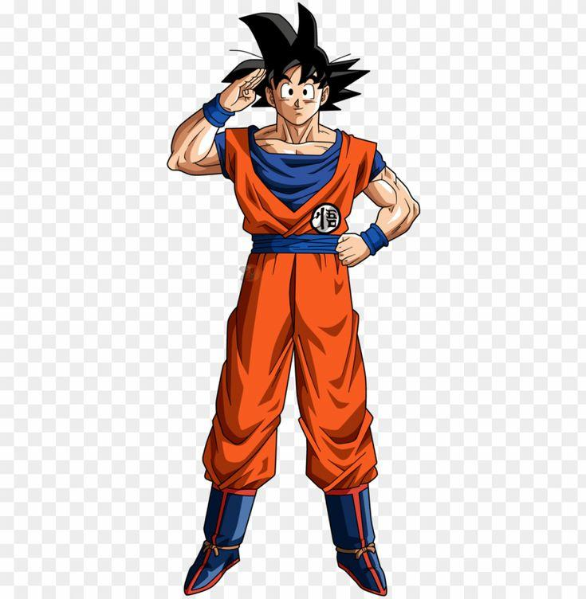
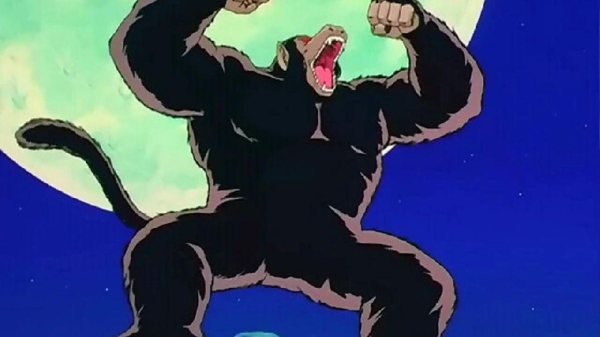
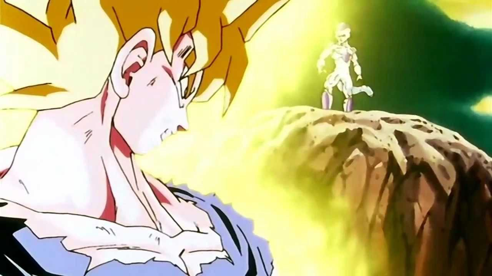
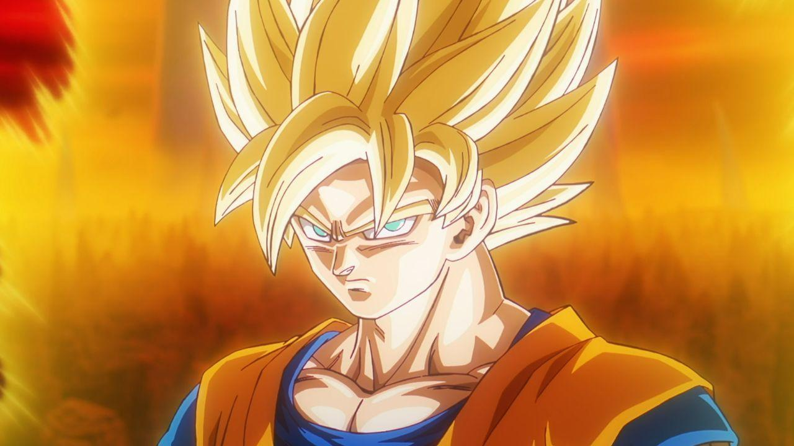
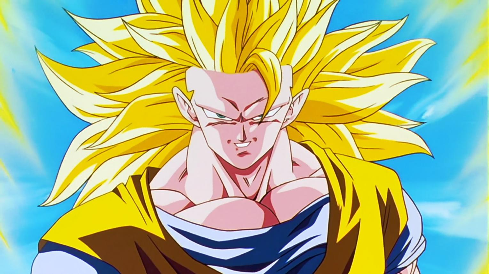
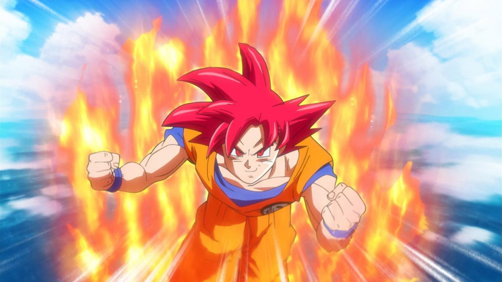
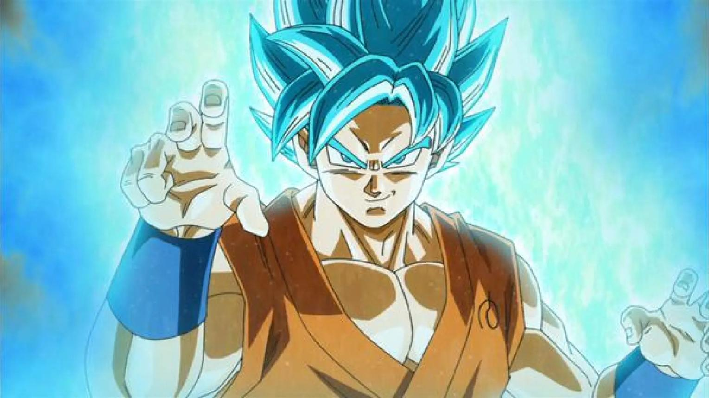
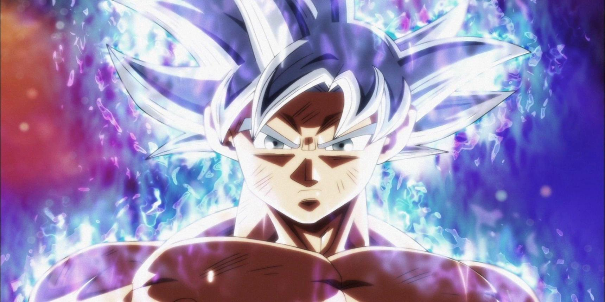

The Evolution of the Saiyan Warrior
From a young Saiyan to the strongest warrior in the universe.
1. Introduction
Goku is one of the most iconic characters in anime history. Throughout the Dragon Ball series, he has continuously pushed beyond his limits, unlocking powerful transformations and becoming stronger with every battle.
2. Base Form
Goku's base form is his natural Saiyan state. Even without transforming, he possesses incredible strength, speed and fighting abilities. His dedication to training allows him to keep improving.

3. Great Ape (Oozaru)
The Great Ape transformation allows Saiyans with their tails to transform under a full moon. In this form, Goku becomes a gigantic ape with enormous physical strength.

4. Super Saiyan
Goku first achieves Super Saiyan during his battle against Frieza. Triggered by intense emotion, this transformation gives him golden hair, a golden aura and a massive increase in power.

5. Super Saiyan 2
Super Saiyan 2 takes the original transformation further. It features a more intense aura with visible electrical sparks and gives Goku an even greater boost in power.

6. Super Saiyan 3
Super Saiyan 3 is one of Goku's most powerful transformations in Dragon Ball Z. It is recognized by its extremely long golden hair and the absence of eyebrows. However, it consumes a tremendous amount of energy.

7. Super Saiyan God
Super Saiyan God introduces Goku to divine energy known as God Ki. This transformation gives him red hair, a slimmer appearance and access to incredible godly power.

8. Super Saiyan Blue
Super Saiyan Blue combines the power of Super Saiyan with the divine energy of Super Saiyan God. Its blue hair and powerful aura represent another major step in Goku's development.

9. Ultra Instinct
Ultra Instinct is a remarkable technique that allows Goku's body to react independently of conscious thought. It gives him incredible speed, reflexes and defensive abilities, making it one of his most extraordinary forms.

10. Conclusion
Goku's evolution represents his endless desire to improve. From his humble beginnings to mastering extraordinary transformations, his journey shows that there is always another limit to break and another challenge to overcome.